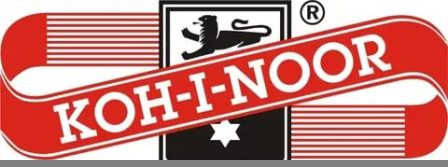
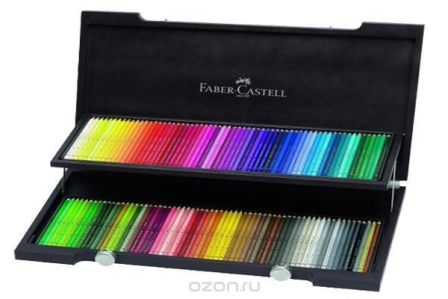
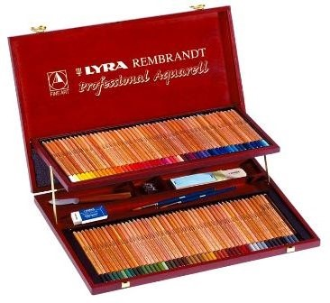
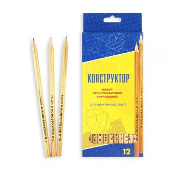

Самые популярные марки карандашей
Большинство российских покупателей не имеют предпочтений среди канцелярских брендов — таково мнение участников рынка товаров для школы и офиса. Более того — конечные потребители, делая выбор, чаще всего не обращают внимания на марку, а доверяют собственным визуальным и тактильным ощущениям. Однако, как и в любом правиле, в этом тоже есть свои исключения.
Koh-I-Noor Hardtmuth

Koh-i-Noor Hardtmuth a.s. (произносится Кох-и-Нур Хардмут А Эс) — чешский производитель широкого ассортимента карандашей, ручек, принадлежностей для рисования и прочих канцелярских товаров. Основана в 1790 году Йозефом Хардмутом (Joseph Hardtmuth) в Австрии и названа в честь алмаза «Кохинур», одного из самых известных драгоценных камней. В 1802 году компания запатентовала первый графитовый карандаш, выполненный из глины и графита.
В 1848 году бизнес перешёл к сыновьям Йозефа, Карлу и Людвигу, которые перенесли производство в чешский город Ческе-Будеёвице. Товары компании были удостоены наград на многих мировых выставках, в том числе в 1855 в Нью-Йорке, в 1856, 1900 и 1925 в Париже, в 1862 в Лондоне, в 1882 в Вене, в 1905 в Милане.
На Всемирной выставке 1889 года в Париже компания представила карандаши нового бренда «Koh-I-Noor Hardtmuth». Новые карандаши, скоро ставшие стандартом во всем мире, представляли собой тонкий графитовый стержень, заключённый в деревянный корпус из кедра.
После второй мировой войны компания Koh-i-Noor Hardtmuth была национализирована, но в 1992 году перешла в частную собственность. В состав концерна входит 8 заводов на территории Чехии, а также зарубежные заводы в Лихтенштейне, Польше, Румынии, Болгарии, Италии, Словакии, Китае и России. Так, например, чешскому концерну частично принадлежит единственный в СНГ производитель карандашей из сибирского кедра Сибирская карандашная фабрика.
Продуктовая линейка компании включает:
- Карандаши
- Шариковые ручки
- Чертёжные инструменты
- Пастель и пр. канцелярские товары
Faber-Castell
Faber-Castell AG (транслитерируется Фабер-Кастелл АГ) — немецкая компания, производитель карандашей, ручек и иных канцелярских товаров, а также продукции для художников. Штаб-квартира компании расположена в городе Штайн (Средняя Франкония, Бавария, Германия).
Компания основана в 1761 году Каспаром Фабером. Под руководством его потомка Иоганна Лотара Фабера в середине XIX века Faber активно развивалась, в частности, начала открывать филиалы в Нью-Йорке (1849), Лондоне (1851), Париже (1855) и других европейских городах. Современное название компания получила благодаря замужеству внучки Лотара Фабера с баварским графом Кастелем. В знак глубокой древности этого владетельного рода на гербе фирмы появились два рыцаря.
Первые подделки продукции Фабера появились в Москве еще в 1856 году. Лотар фон Фабер обратился к немецкому правительству с требованием о защите бренда. Закон вступил в силу в 1875 году. Так Лотар фон Фабер стал родоначальником немецкого законодательства о защите товарных знаков.
С конца XIX века Faber-Castell была известна как важный поставщик логарифмических линеек. В 1970-х годах, с появлением электронных калькуляторов, компания стала терять рыночную долю и решила занимать иные ниши, в частности, начала производство маркеров. В 1980-х сбыт Faber-Castell вновь оказался под угрозой в связи с массовым появлением систем автоматизированного проектирования (CAD), что подвигло компанию обратиться к рынку товаров для рисования.
Компания выпускает широкую гамму карандашей (включая косметические), ручек, иных канцелярских товаров, товаров для художников (карандаши, пастельные и акварельные краски, мелки и др.), а также пишущие инструменты и товары из кожи класса люкс. По состоянию на март 2012 года компании принадлежало 14 фабрик и 23 торговых предприятия. В Германии сейчас выпускается лишь наиболее дорогая продукция компании, основное производство сконцентрировано в Бразилии.
Компания активно поставляла свою продукцию в дореволюционную Россию (представительство в Санкт-Петербурге действовало с 1874 года), и даже графит для её карандашей добывался в Сибири. После прихода к власти большевиков компания надолго покинула страну.С начала XXI века дистрибуцией продукции Faber-Castell в России занималась турецкая компания Anadolu Group. С сентября 2011 года немецкая компания совместно с Anadolu открыла в России дочернюю компанию, которая и занимается поставками продукции в Россию.
LYRA
LYRA – это широко известный (особенно среди профессиональных художников) немецкий бренд, зарегистрированный уже более ста лет назад, в 1886 году. Товары Лира настолько хороши, что рекомендуются всем - и профессионалам, и начинающим. Для начинающих и для детей у LYRA есть линейка недорогих товаров.
Вот уже два века немецкая фабрика Lyra производит карандаши и другие художественные принадлежности, став частью истории Германии и войдя в число лучших производителей карандашей в мире. Для производства карандашей Lyra использует только материалы наивысшего качества.
Ассортимент цветных карандашей Lyra широк и разнообразен. Lyra выпускает дешевую серию для школы в картонной упаковке Colors и Osiris, среднюю по цене серию в картоне Ferby, более дорогие карандаши для детского творчества в картоне и металле Цветной Великан и Super; и профессиональные карандаши для художников в металлических и деревянных коробках. Практически во всех этих группах есть акварельные карандаши.
Конструктор
Фабрика имени Красина: производство карандашей
Старейшее в России предприятие по производству карандашей Фабрика им. Красина было и остается флагманом в своей отрасли. Богатые традиции и высокий профессионализм специалистов компании, как и много лет назад, позволяют творить живую историю карандаша.
Благодаря богатству ассортимента на фабрике можно купить карандаши самого разного предназначения. Карандаши оптом реализуются партиями из гроссов или наборов. На страницах сайта представлена лишь та продукция, которая является частью репутации фабрики — самые известные и востребованные модели карандашей (цветные, графитные, художественные и многие другие). Но ассортимент регулярно пополняется, способствуя развитию фабрики, а также бизнеса ее партнеров.
Несмотря на большое разнообразие карандашной продукции, не все производители карандашей предлагают изделия действительно хорошего качества. Именно поэтому перед многими людьми стоит вопрос о том, где купить карандаши, которые будут качественно выполнять свою функцию. Приобретая карандаши, нужно доверять только тем производителям, которые за долгие годы работы заслужили хороший авторитет и прославились благодаря отличному качеству своей продукции.Эта кампания, которая стала правопреемником производственных мощностей, технологий и традиций Московской карандашной фабрики имени Красина, осуществляющей свою деятельность еще с ноября 1926 года. Их предприятие является первым российским предприятием, которое обладает полным технологическим циклом и специализируется на изготовлении карандашей в древесной оболочке. В течение всех лет своей деятельности мы смогли не только сохранить высокое качество своих изделий, но и постоянно его повышаем, оставаясь при этом одним из самых крупных предприятий по изготовлению канцелярских принадлежностей в России.
Фабрика производит:
- Чёртежные карандаши
- Графитные карандаши
- Графитные стержни
- Копировальные карандаши
- Цветные карандаши
- Восковые карандаши различных цветов
- Угольные карандаши
Здесь вы всегда можете приобрести карандашную продукцию для выполнения различного вида работ – столярно-плотницких, чертежно-графитных, дизайнерских, художественных, канцелярских и разметочных работ. Отдельным видом изготавливаемых нами изделий являются карандаши сувенирные (карандаш подарок). Такие карандаши имеют большой спрос у фирм и компаний различного профиля, которые используют карандаш сувенир в качестве подарка партнерам по бизнесу, сотрудникам, клиентам и т.д. Подарочные карандаши могут содержать логотип компании, ее слоган и могут быть выполнены в фирменных цветах компании-заказчика.
Основной группой покупателей, которых интересует карандаш москва, являются родители детей школьного и дошкольного возраста. Принимая это во внимание, здесь уделяется особое внимание обеспечению абсолютной безопасности всей производимой ими продукции. В результате этого, для производства карандашей они используем только те материалы и сырье, которые обладают специальными сертификатами, подтверждающими право применения данных материалов в пищевой промышленности и их взаимодействия с пищевыми продуктами.
Политика их производственно-торговой компании заключается в изготовлении продукции, которая полностью отвечает всем эксплуатационным, функциональным, органолептическим требованиям различных групп покупателей. Они делают все для того, чтобы чертежные карандаши, подарочные карандаши, а также вся другая наша канцелярская продукция имела максимальные показатели качества.

©Романов Роман группа №216.